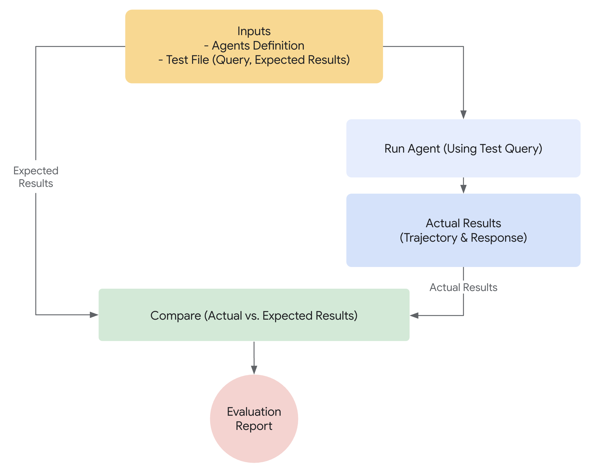

Why Evaluate Agents¶
In traditional software development, unit tests and integration tests provide confidence that code functions as expected and remains stable through changes. These tests provide a clear "pass/fail" signal, guiding further development. However, LLM agents introduce a level of variability that makes traditional testing approaches insufficient.
Due to the probabilistic nature of models, deterministic "pass/fail" assertions are often unsuitable for evaluating agent performance. Instead, we need qualitative evaluations of both the final output and the agent's trajectory - the sequence of steps taken to reach the solution. This involves assessing the quality of the agent's decisions, its reasoning process, and the final result.
This may seem like a lot of extra work to set up, but the investment of automating evaluations pays off quickly. If you intend to progress beyond prototype, this is a highly recommended best practice.

Preparing for Agent Evaluations¶
Before automating agent evaluations, define clear objectives and success criteria:
- Define Success: What constitutes a successful outcome for your agent?
- Identify Critical Tasks: What are the essential tasks your agent must accomplish?
- Choose Relevant Metrics: What metrics will you track to measure performance?
These considerations will guide the creation of evaluation scenarios and enable effective monitoring of agent behavior in real-world deployments.
What to Evaluate?¶
To bridge the gap between a proof-of-concept and a production-ready AI agent, a robust and automated evaluation framework is essential. Unlike evaluating generative models, where the focus is primarily on the final output, agent evaluation requires a deeper understanding of the decision-making process. Agent evaluation can be broken down into two components:
- Evaluating Trajectory and Tool Use: Analyzing the steps an agent takes to reach a solution, including its choice of tools, strategies, and the efficiency of its approach.
- Evaluating the Final Response: Assessing the quality, relevance, and correctness of the agent's final output.
The trajectory is just a list of steps the agent took before it returned to the user. We can compare that against the list of steps we expect the agent to have taken.
Evaluating trajectory and tool use¶
Before responding to a user, an agent typically performs a series of actions, which we refer to as a 'trajectory.' It might compare the user input with session history to disambiguate a term, or lookup a policy document, search a knowledge base or invoke an API to save a ticket. We call this a ‘trajectory’ of actions. Evaluating an agent's performance requires comparing its actual trajectory to an expected, or ideal, one. This comparison can reveal errors and inefficiencies in the agent's process. The expected trajectory represents the ground truth -- the list of steps we anticipate the agent should take.
For example:
// Trajectory evaluation will compare
expected_steps = ["determine_intent", "use_tool", "review_results", "report_generation"]
actual_steps = ["determine_intent", "use_tool", "review_results", "report_generation"]
Several ground-truth-based trajectory evaluations exist:
- Exact match: Requires a perfect match to the ideal trajectory.
- In-order match: Requires the correct actions in the correct order, allows for extra actions.
- Any-order match: Requires the correct actions in any order, allows for extra actions.
- Precision: Measures the relevance/correctness of predicted actions.
- Recall: Measures how many essential actions are captured in the prediction.
- Single-tool use: Checks for the inclusion of a specific action.
Choosing the right evaluation metric depends on the specific requirements and goals of your agent. For instance, in high-stakes scenarios, an exact match might be crucial, while in more flexible situations, an in-order or any-order match might suffice.
How Evaluation works with the ADK¶
The ADK offers two methods for evaluating agent performance against predefined datasets and evaluation criteria. While conceptually similar, they differ in the amount of data they can process, which typically dictates the appropriate use case for each.
First approach: Using a test file¶
This approach involves creating individual test files, each representing a single, simple agent-model interaction (a session). It's most effective during active agent development, serving as a form of unit testing. These tests are designed for rapid execution and should focus on simple session complexity. Each test file contains a single session, which may consist of multiple turns. A turn represents a single interaction between the user and the agent. Each turn includes
query:This is the user query.expected_tool_use: The tool call(s) that we expect the agent to make in order to respond correctly to the userquery.expected_intermediate_agent_responses: This field contains the natural language responses produced by the agent as it progresses towards a final answer. These responses are typical in multi-agent systems where a root agent relies on child agents to accomplish a task. While generally not directly relevant to end-users, these intermediate responses are valuable for developers. They provide insight into the agent's reasoning path and help verify that it followed the correct steps to generate the final response.reference: The expected final response from the model.
You can give the file any name for example evaluation.test.json.The framework only checks for the .test.json suffix, and the preceding part of the filename is not constrained. Here is a test file with a few examples:
[
{
"query": "hi",
"expected_tool_use": [],
"expected_intermediate_agent_responses": [],
"reference": "Hello! What can I do for you?\n"
},
{
"query": "roll a die for me",
"expected_tool_use": [
{
"tool_name": "roll_die",
"tool_input": {
"sides": 6
}
}
],
"expected_intermediate_agent_responses": [],
},
{
"query": "what's the time now?",
"expected_tool_use": [],
"expected_intermediate_agent_responses": [],
"reference": "I'm sorry, I cannot access real-time information, including the current time. My capabilities are limited to rolling dice and checking prime numbers.\n"
}
]
Test files can be organized into folders. Optionally, a folder can also include a test_config.json file that specifies the evaluation criteria.
Second approach: Using An Evalset File¶
The evalset approach utilizes a dedicated dataset called an "evalset" for evaluating agent-model interactions. Similar to a test file, the evalset contains example interactions. However, an evalset can contain multiple, potentially lengthy sessions, making it ideal for simulating complex, multi-turn conversations. Due to its ability to represent complex sessions, the evalset is well-suited for integration tests. These tests are typically run less frequently than unit tests due to their more extensive nature.
An evalset file contains multiple "evals," each representing a distinct session. Each eval consists of one or more "turns," which include the user query, expected tool use, expected intermediate agent responses, and a reference response. These fields have the same meaning as they do in the test file approach. Each eval is identified by a unique name. Furthermore, each eval includes an associated initial session state.
Creating evalsets manually can be complex, therefore UI tools are provided to help capture relevant sessions and easily convert them into evals within your evalset. Learn more about using the web UI for evaluation below. Here is an example evalset containing two sessions.
[
{
"name": "roll_16_sided_dice_and_then_check_if_6151953_is_prime",
"data": [
{
"query": "What can you do?",
"expected_tool_use": [],
"expected_intermediate_agent_responses": [],
"reference": "I can roll dice of different sizes and check if a number is prime. I can also use multiple tools in parallel.\n"
},
{
"query": "Roll a 16 sided dice for me",
"expected_tool_use": [
{
"tool_name": "roll_die",
"tool_input": {
"sides": 16
}
}
],
"expected_intermediate_agent_responses": [],
"reference": "I rolled a 16 sided die and got 13.\n"
},
{
"query": "Is 6151953 a prime number?",
"expected_tool_use": [
{
"tool_name": "check_prime",
"tool_input": {
"nums": [
6151953
]
}
}
],
"expected_intermediate_agent_responses": [],
"reference": "No, 6151953 is not a prime number.\n"
}
],
"initial_session": {
"state": {},
"app_name": "hello_world",
"user_id": "user"
}
},
{
"name": "roll_17_sided_dice_twice",
"data": [
{
"query": "What can you do?",
"expected_tool_use": [],
"expected_intermediate_agent_responses": [],
"reference": "I can roll dice of different sizes and check if a number is prime. I can also use multiple tools in parallel.\n"
},
{
"query": "Roll a 17 sided dice twice for me",
"expected_tool_use": [
{
"tool_name": "roll_die",
"tool_input": {
"sides": 17
}
},
{
"tool_name": "roll_die",
"tool_input": {
"sides": 17
}
}
],
"expected_intermediate_agent_responses": [],
"reference": "I have rolled a 17 sided die twice. The first roll was 13 and the second roll was 4.\n"
}
],
"initial_session": {
"state": {},
"app_name": "hello_world",
"user_id": "user"
}
}
]
Evaluation Criteria¶
The evaluation criteria define how the agent's performance is measured against the evalset. The following metrics are supported:
tool_trajectory_avg_score: This metric compares the agent's actual tool usage during the evaluation against the expected tool usage defined in theexpected_tool_usefield. Each matching tool usage step receives a score of 1, while a mismatch receives a score of 0. The final score is the average of these matches, representing the accuracy of the tool usage trajectory.response_match_score: This metric compares the agent's final natural language response to the expected final response, stored in thereferencefield. We use the ROUGE metric to calculate the similarity between the two responses.
If no evaluation criteria are provided, the following default configuration is used:
tool_trajectory_avg_score: Defaults to 1.0, requiring a 100% match in the tool usage trajectory.response_match_score: Defaults to 0.8, allowing for a small margin of error in the agent's natural language responses.
Here is an example of a test_config.json file specifying custom evaluation criteria:
How to run Evaluation with the ADK¶
As a developer, you can evaluate your agents using the ADK in the following ways:
- Web-based UI (
adk web): Evaluate agents interactively through a web-based interface. - Programmatically (
pytest): Integrate evaluation into your testing pipeline usingpytestand test files. - Command Line Interface (
adk eval): Run evaluations on an existing evaluation set file directly from the command line.
1. adk web - Run Evaluations via the Web UI¶
The web UI provides an interactive way to evaluate agents and generate evaluation datasets.
Steps to run evaluation via the web ui:
- Start the web server by running:
bash adk web samples_for_testing - In the web interface:
- Select an agent (e.g.,
hello_world). - Interact with the agent to create a session that you want to save as a test case.
- Click the “Eval tab” on the right side of the interface.
- If you already have an existing eval set, select that or create a new one by clicking on "Create new eval set" button. Give your eval set a contextual name. Select the newly created evaluation set.
- Click "Add current session" to save the current session as an eval in the eval set file. You will be asked to provide a name for this eval, again give it a contextual name.
- Once created, the newly created eval will show up in the list of available evals in the eval set file. You can run all or select specific ones to run the eval.
- The status of each eval will be shown in the UI.
- Select an agent (e.g.,
2. pytest - Run Tests Programmatically¶
You can also use pytest to run test files as part of your integration tests.
Example Command¶
Example Test Code¶
Here is an example of a pytest test case that runs a single test file:
from google.adk.evaluation.agent_evaluator import AgentEvaluator
def test_with_single_test_file():
"""Test the agent's basic ability via a session file."""
AgentEvaluator.evaluate(
agent_module="home_automation_agent",
eval_dataset_file_path_or_dir="tests/integration/fixture/home_automation_agent/simple_test.test.json",
)
This approach allows you to integrate agent evaluations into your CI/CD pipelines or larger test suites. If you want to specify the initial session state for your tests, you can do that by storing the session details in a file and passing that to AgentEvaluator.evaluate method.
Here is a sample session json file:
{
"id": "test_id",
"app_name": "trip_planner_agent",
"user_id": "test_user",
"state": {
"origin": "San Francisco",
"interests": "Moutains, Hikes",
"range": "1000 miles",
"cities": ""
},
"events": [],
"last_update_time": 1741218714.258285
}
And the sample code will look like this:
from google.adk.evaluation.agent_evaluator import AgentEvaluator
def test_with_single_test_file():
"""Test the agent's basic ability via a session file."""
AgentEvaluator.evaluate(
agent_module="trip_planner_agent",
eval_dataset_file_path_or_dir="tests/integration/fixture/trip_planner_agent/simple_test.test.json",
initial_session_file="tests/integration/fixture/trip_planner_agent/initial.session.json"
)
3. adk eval - Run Evaluations via the cli¶
You can also run evaluation of an eval set file through the command line interface (CLI). This runs the same evaluation that runs on the UI, but it helps with automation, i.e. you can add this command as a part of your regular build generation and verification process.
Here is the command:
adk eval \
<AGENT_MODULE_FILE_PATH> \
<EVAL_SET_FILE_PATH> \
[--config_file_path=<PATH_TO_TEST_JSON_CONFIG_FILE>] \
[--print_detailed_results]
For example:
adk eval \
samples_for_testing/hello_world \
samples_for_testing/hello_world/hello_world_eval_set_001.evalset.json
Here are the details for each command line argument:
AGENT_MODULE_FILE_PATH: The path to the__init__.pyfile that contains a module by the name "agent". "agent" module contains aroot_agent.EVAL_SET_FILE_PATH: The path to evaluations file(s). You can specify one or more eval set file paths. For each file, all evals will be run by default. If you want to run only specific evals from a eval set, first create a comma separated list of eval names and then add that as a suffix to the eval set file name, demarcated by a colon:.- For example:
sample_eval_set_file.json:eval_1,eval_2,eval_3
This will only run eval_1, eval_2 and eval_3 from sample_eval_set_file.json CONFIG_FILE_PATH: The path to the config file.PRINT_DETAILED_RESULTS: Prints detailed results on the console.